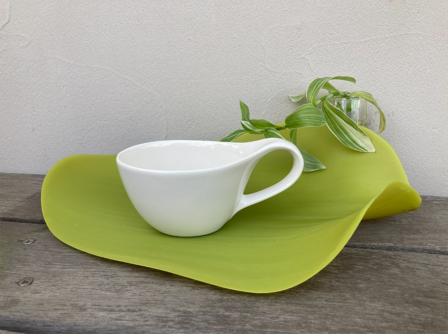

About

GreenTerraceについて
当教室では、季節の果物の豊かな風味を閉じ込める自家製ジャムの作り方をご紹介しています。
「せっかく手作りしても、一度にたくさんできてしまい、最後まで飽きずに食べきれるか不安...」というお悩みを解消するため、様々なアレンジ活用術や、美味しく長持ちさせるための工夫も丁寧にお伝えします。
手作りの温もりを通して、皆様の日々の食卓や暮らしが、少しでも豊かに、心地よくなるためのヒントとなれば幸いです。
私について
毎年、田舎から段ボールいっぱいに届く季節の果物たち。
その豊かな恵みを最後まで無駄なく、美味しく楽しむ方法はないかと模索した結果、長期保存に適したジャム作りにたどり着きました。
パンを食べるのも作るのも好きなので、ジャムをソース代わりにしてワッフルにかけたり、ベーグル生地に練りこんだり、アップルパイのフィリングにしたり、アレンジをするのも私の楽しみのひとつです。
私にとって、ジャム作りは「もったいない」を「幸せ」に変えるための大切な習慣になっています。